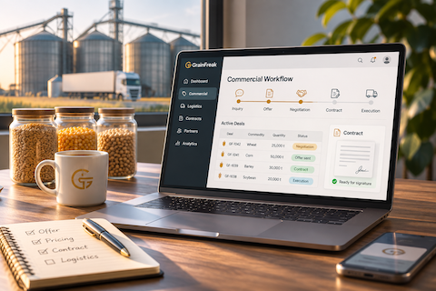
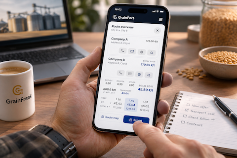
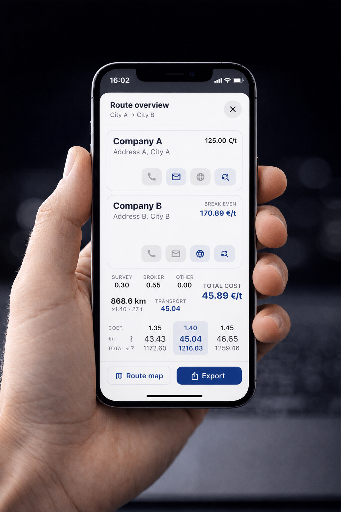

The intelligent tools for grain trade teams.
GrainFreak brings clarity to the work behind every deal — from spoken trade terms and contract drafts to route planning with GrainPort. Made for real workflows, with people in control.
Wheat · 500 tonnes · December delivery
Built for the decisions behind every trade.
From the first commercial conversation to logistics and the documents behind a deal, GrainFreak focuses on practical workflows—not another layer of complexity.

COMMERCIALCommercial Workflow
Keep offers, delivered pricing, and follow-up closer to the decision — not scattered across inboxes and spreadsheets.
Logistics & Execution
Support route, freight, and operational decisions without slowing down the commercial side of the trade.

TOOLSSpecialist Tools
GrainPort for transport cost. AI agents for repetitive tasks. Each tool solves one problem well.
From first words to the right paperwork.
AI structures the deal — you stay in control. Every output is reviewed and approved by a human before it goes anywhere.
Describe the deal
Speak or type the trade terms. AI extracts commodity, quantity, price, delivery period, and counterparties.
Review & confirm
Check every extracted field. Add missing terms. The system highlights what it’s unsure about — it never guesses.
Draft & send
Generate an editable confirmation email and contract draft. You review, edit, and approve before anything leaves your desk.
Human approval is required at every stage. Missing details are highlighted, never assumed. No document is sent without explicit confirmation.
Better freight decisions.
Better delivered prices.
GrainPort — Transport cost tool
Turn route and transport assumptions into faster, cleaner grain quotes. Calculate delivered costs, compare route alternatives, and produce client-ready pricing in minutes.
- Transport cost estimation with configurable assumptions
- Route comparison and alternative optimization
- Delivered quote generation for client-ready offers
- Accessible through the GrainPort application

Compare transport assumptions and prepare clearer quotes before you commit.
Logistics acceleration,
in development.
AI Agents — for grain trade teams
AI agents that handle repetitive tasks: drafting offers from phone calls, generating transport quotes, checking contract terms, and accelerating logistics decisions across borders and languages.
- Offer generation from natural language input
- Contract review and compliance checks
- Logistics planning and route optimization
- Cross-language trade communication (EN / DE / HR / SR)
- Integration with email, WhatsApp, and browser
Drafting assistance only. A person checks and approves each output.
Built for real
operating work.
Explore the workflows we are building for grain trade teams. Availability varies by feature; contact us for pilot details.
Capabilities overview · Includes planned and pilot-stage features
Drafted Offers
Describe a deal by phone or text. The agent drafts a complete offer with pricing, terms, and logistics — ready for review.
Pricing Calculation
GrainPort runs delivered cost automatically. The agent formats results into a client-ready quote.
Follow-Up Tracking
Every offer is tracked from draft to sent to accepted. No more lost threads across inboxes.
Route Optimization
Compare truck, rail, and vessel options. See cost, time, and reliability side by side.
Freight Management
Track freight rates across routes and borders. Update quotes when market conditions shift.
Delivery Timeline
Calculate realistic delivery windows. Flag delays before they become problems.
Contract Review
Check terms against standard templates. Flag deviations, compliance issues, and missing clauses.
Compliance Checks
Verify regulatory requirements across jurisdictions. Catch issues before they reach legal review.
Human Approval
Agents draft and prepare — humans approve. Every output is editable before it goes to a client.
Multi-Language
Communicate across EN, DE, HR, SR. Draft and translate trade correspondence without losing commercial nuance.
Multi-Currency
Handle EUR, USD, GBP, and regional currencies. Convert and compare across markets.
Cross-Border Freight
EU and regional routes supported. Customs, duties, and transit documentation managed in workflow.
Technology that understands the trade.
Grain trading happens across calls, inboxes, spreadsheets, trucks, and contracts. GrainFreak is building practical AI tools that fit into this world rather than asking teams to change everything at once.
Shape the tools
your team will use.
We’re inviting grain trading teams to evaluate emerging AI workflows and help shape the product. Contact us for current pilot availability and terms.
Early access
Explore selected tools and early AI workflows with our team, based on pilot scope and availability.
Direct feedback
Weekly check-ins with our product team. Your input directly shapes what we build next — not a survey, a conversation.
No commitment
Discuss pilot scope and terms directly with the team before committing to an evaluation.
Let’s make your next trade
simpler.
AI for grain trade, logistics, and execution. GrainPort is available now. AI agents are in active development. Tell us about your team.
Tell us about your team.
We’ll get back to you about product demos, GrainPort, or an AI pilot.